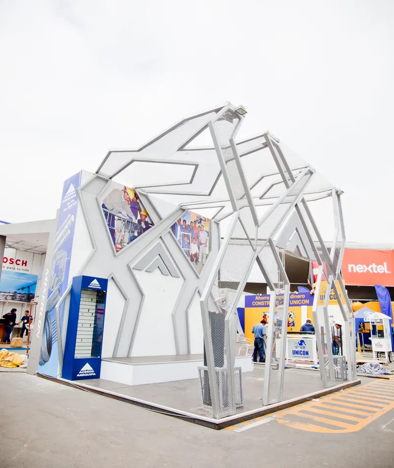
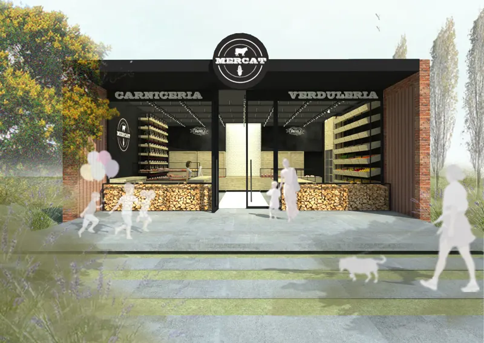
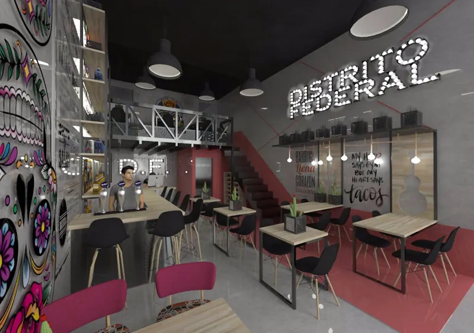
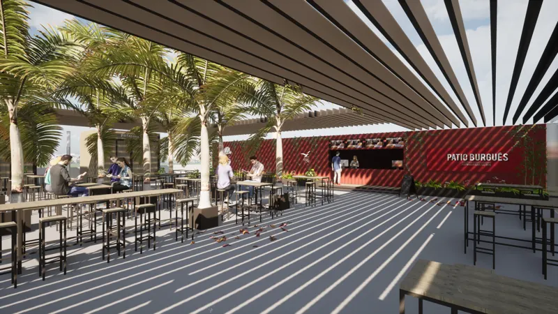
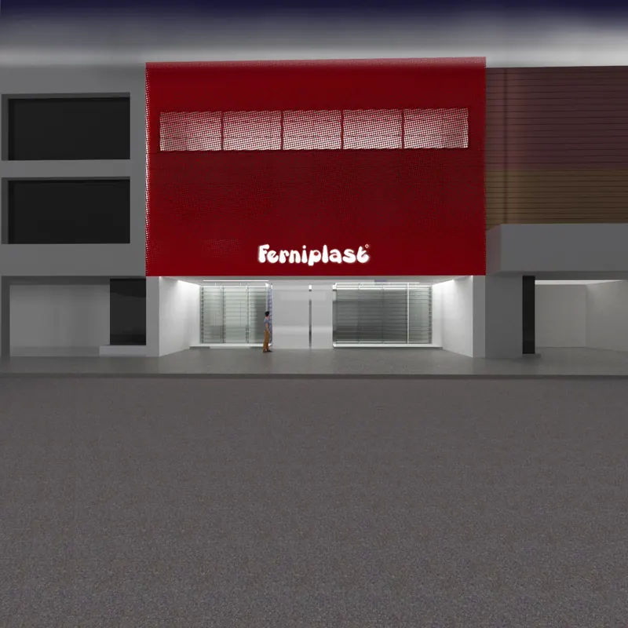
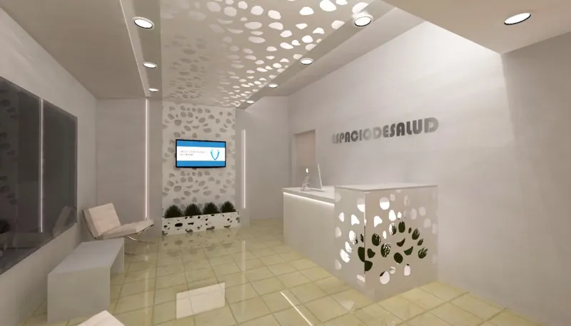
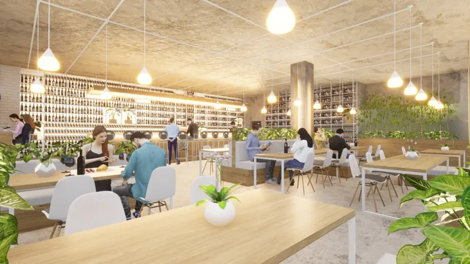
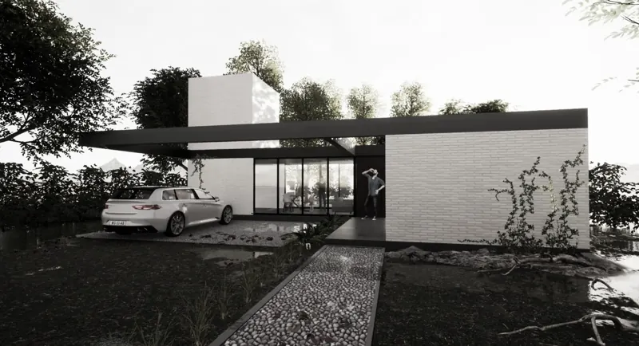

Inicio / Proyectos
Proyectos
Stands, locales, interiores y viviendas diseñados y construidos por Grupo Arpeco. Los renders están indicados.

Edwin Guerra
Stand para feria de calzado

B-Way
Stand con pórtico de luz LED

Kawasaki
Showroom de motos

Bausch + Lomb
Stand institucional

Blangino
Stand en madera OSB con pórticos verdes

Bajaj
Showroom de motos

VKR
Stand de calzado

Blangino
Stand con marquesina y letrero

Von Franken
Stand de salud animal

Transatlantic Gaming
Stand de máquinas de juego

Romero Juri Viajes
Oficina comercial

Yo ConstructorRender
Stand escultórico

MercatRender
Carnicería y verdulería

Distrito FederalRender
Local gastronómico

Patio BurguésRender
Patio gastronómico

FerniplastRender
Fachada comercial

ConsultoriosRender
Recepción de centro de salud

RestauranteRender
Salón con cava y vegetación

RestauranteRender
Salón con estructura de madera

Complejo de dúplex
Vivienda multifamiliar

Vivienda unifamiliarRender
Vivienda
¿Tenés una feria o un local en puerta?
Contanos fecha, lugar y metros. Te respondemos con una propuesta.